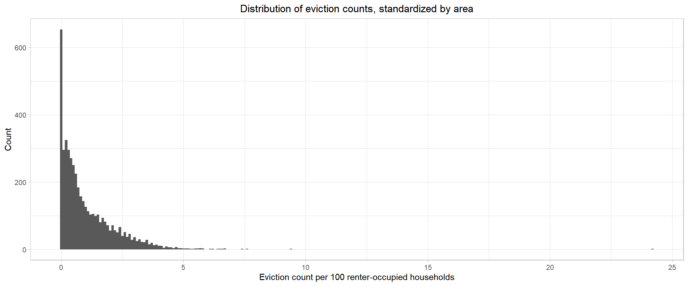
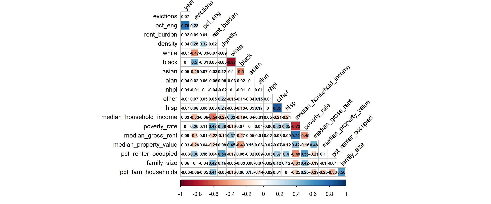
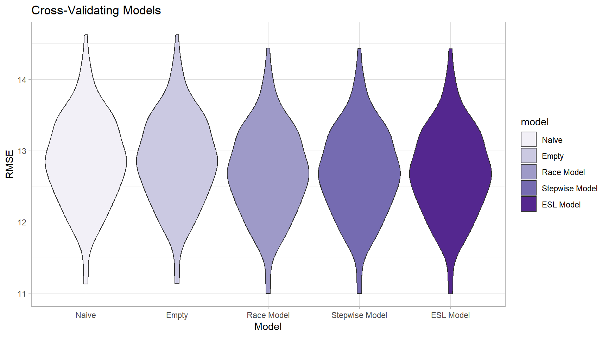

Model Building
Predictors of Eviction in Brooklyn, 2010-2016
Overview
Using existing data, we aim to investigate factors that are associated with - and can potentially be used to predict - eviction rates among census tracts in Brooklyn.
We propose using Generalized Estimating Equations (GEE). GEEs can be used to model correlated/hierarchical data, and group-level (hierarchical) estimates are not desired. Since our data are repeated over time within census tract (2010-2016), we expect there to be autocorrelation present across years, and we can address this using GEE modeling techniques.
More specifically, we propose using a GEE modelling framework with a log link function. Our outcome variable, eviction rate, is calculated by dividing count of evictions by the number of renter-occupied households; since this is based on a count variable, evictions, we expect our outcome to assume a Poisson distribution. Thus, we can use a log link function to model the expected count of evictions, and include the denominator of our eviction rate - number of renter-occupied households - as an offset term in the right-hand side of our equation.
Finally, we propose using an AR(1) correlation structure, since autocorrelation can be reasonably expected given our data are measured over time. (In short, this means that, as one data point moves farther away from another correlated data point, the correlation between them decreases exponentially. We might reasonably expect this to happen over time with our data - e.g. a census tract’s 2006 eviction rate may be more similar to its 2005 eviction rate than to its 2000 eviction rate.)
Since our outcome, eviction rate, is calculated using a count variable (number of evictions) repeated over time within areas, we’ll model it using GEE with a Poisson link function.

Relevant predictors
Although we formulated specific hypotheses regarding predictors of eviction in Brooklyn based on existing research, we wanted to include as many potential predictors as possible to test against our hypothesized predictors. The data we are using includes the following variables:
evictions. Number of evictions at census level.eviction_filings. Number of eviction filings at census level.renter_occupied_households. Number of renter occupied households in census tract. As mentioned above, this forms the denominator of our modelled rate and will be included in all models as an offset term (aslog(renter_occupied_households)).years_since_2010. Since our data range from 2010 to 2016, and we did not want to assume a constant effect of time, we included year as a set of indicator variables in all models except our empty model (see below).hisp. Percent of population (at census tract level, for all race/ethnicity variables) that self-report Hispanic ethnicity.white. Percent self-reporting White race.black. Percent self-reporting Black race.asian. Percent self-reporting Asian race.aian. Percent self-reporting American Indian / Alaska Native race.nhpi. Percent self-reporting Native Hawaiian / Pacific Islander race.other. Percent self-reporting other race.rent_burden. Average percent of income spent on rent.density. Population density.pct_eng. Percent of population who speak English less than ‘Very Well’. This is interpreted as a proxy for percent English as a second language (ESL) speakers.median_household_income. Median census tract household income in USD.poverty_rate. Percent living below Federal Poverty Line (FPL).median_gross_rent. Median census tract gross rent in USD.pct_renter_occupied. Percent of census tract occupied by renters.median_property_value. Median census tract property value in USD.family_size. Average family size in census tract.pct_fam_households. Percentage of census tract households that contain families.
Note: Since our repeated data are clustered within census tracts, we could not include neighborhood, an otherwise important predictor of eviction rates. If we wanted to conduct models similar to these but (1) within census tracts across time AND (2) also modelling census tracts clustered within neighborhoods, we would have to move into some sort of hierarchical/multilevel modelling structure.
In our model-building Shiny app (see navigation bar), we have included a set of indicator variables representing Brooklyn neighborhoods using a simpler Generalized Linear Model (GLM).
Hypothesis
Based on prior reading and research, we hypothesize the following predictors of eviction count at the census tract level. See above for variable definitions.
years_since_2010rent_burdendensitypct_eng- Race/ethnicity variables (
white,black,asian,aian,nhpi,other,hisp)
Model:

Correlation matrix
Before proceeding, it is important to assess crude correlation among our relevant variables, in case issues of multicollinearity arise during model development.
joined_data_bklyn_nomissing %>%
mutate(year = as.numeric(year)) %>%
#select(-pct_nonwhite_racedata, -pct_af_am, am_ind_ak_native = aian) %>%
select(year, evictions,
pct_eng, rent_burden, density,
white, black, asian, aian, nhpi, other, hisp,
median_household_income, poverty_rate, median_gross_rent, median_property_value, pct_renter_occupied,
family_size, pct_fam_households) %>%
# select_if(is.numeric) %>%
cor() %>%
corrplot::corrplot(type = "lower",
method = "square",
addCoef.col = "black",
diag = FALSE,
number.cex = .6,
tl.col = "black",
tl.cex = .9,
tl.srt = 45)
## NOTES
## include hisp instead of other, since highly correlated (.85)
## include black not white, since highly correlated (-.87)
## fit two models:
## one to look at pct_eng, controlling for race (pct_eng + all races except white, other + other predictors)
## one to just look at race (all races except white, other + other predictors)Of relevance to our hypotheses, the following variables were highly correlated and thus may not be accurately interpreted in a model as independent predictors:
pct_engandyear(r = 0.76)whiteandblack(r = -0.87)hispandotherrace (r = 0.85)
Note on confounding
After performing exploratory data analysis and crude univariate plots (not shown), we found that the relationship between pct_eng - percent of ESL speakers - and eviction rate is confounded by black race.
At first, the relationship between ESL speakers and eviction rate was inverse - as ESL increased, evictions actually decreased. This is counter to our hypotheses, as non-English speaking and immigrant communities have been shown to experience much higher rates of eviction. However, we knew that Black race had the potential to confound this relationship, as Black NYC communities are overwhelmingly English-speaking and also at an increased risk of eviction due to other factors.
Once we adjusted for Black race in the relationship between ESL and evictions, the relationship flipped, and EsL was demonstrated to have a positive association with eviction rate, adjusting for Black race.
Refining and subdefining our hypothesized model
We refined our hypothesized models based on our exploratory confounding and other analyses:
- As noted above, ESL should not be included in a model without adjusting for Black race nor should it be interpreted independently of year due to high correlation. Thus, our first hypothesized sub-model will include ESL and percent of all race/ethnicity variables (interpreted as the independent effects of ESL and years since 2010 [highly correlated], rent burden, or population density on evictions, adjusting for each other predictor variable and race/ethnicity). [Equation 2]

- As also noted above, percent White race and percent Black race are highly correlated in our data (r = 0.87), and percent other race and percent Hispanic ethnicity are also highly correlated (r = 0.85). Thus, a second hypothesized sub-model will observe the independent effects of percent racial/ethnic compositions (excluding White and Other race), rent burden, population density, or years since 2010 on eviction rates, adjusting for other predictor variables. [Equation 3]

Stepwise automatic model selection
To contrast with our hypothesis-informed model building process, we wanted to test a stepwise model selection algorithm. We used the gee_stepper function within the pstools package, which performs a forward step selection process with a set of GEE predictors, using QIC to find a ‘best fit’ model.
We slightly modified the function code to create our own function - gee_stepper_o - in order to include our offset term by default in the stepwise selection process.
## use full dataset
full_fit =
geeglm(evictions ~
offset(log(renter_occupied_households)) + years_since_2010 +
pct_eng + rent_burden + pct_nonwhite_racedata + density + ## hypothesized
black + aian + asian + nhpi + other + hisp + ## race
poverty_rate + pct_renter_occupied + median_gross_rent + median_household_income + median_property_value +
eviction_filings + family_size + pct_fam_households,
data = joined_data_bklyn_nomissing,
id = geoid,
family = poisson,
corstr = "ar1")
gee_stepper_o(full_fit, formula(full_fit)) ## customized function to automatically include offset and time covariateAfter running stepwise selection, our GEE stepwise model includes predictors:
- [
offset] - held constant blackhisprent_burdenpct_engdensitymedian_gross_rentpoverty_ratemedian_household_incomeasianaiannhpi
This model includes both pct_eng and black, so we can fully interpret the effects of ESL adjusting for confounding by percent Black race. However, to be conservative in our interpretations, median_household_income should not be interpreted separately from poverty_rate (r = -0.73) or median_gross_rent (r = -0.74).
Summary of models
To summarize, we will consider the following models to predict census tract-level eviction rates:
Two hypothesized models: 1. A hypothesized model based primarily on percent ESL speakers [Equation 2, above] 2. A hypothesized model based primarily on independent effects of race/ethnicity percentages [Equation 3, above]
- A model selected via a GEE-specific forward stepwise selection process
In addition to these three models (1, 2, 3), we propose two baseline models:
- An empty model, in which there are no predictors, and only the outcome and offset terms are included on opposite sides of the equation, i.e.
evictions ~ offset(log(renter_occupied_households)) - A naive model, which only uses time to predict eviction rate (i.e. the above model, plus
years_since_2010on the right-hand-side of the model)
Cross-validation of models
Since our data are modelled using GEE and are not all nested within each other, there is not a straightforward way to compare their prediction capabilities such as hypothesis testing or AIC (in this case, QIC). However, we can use cross validation, which allows us to compare prediction accuracy across non-nested models. While this technique does not allow us to assess statistical significance of hypotheses/models/predictors tested, we still believe it will be useful in gauging model usefulness.
Specifically, we will compare the repeat-sampled distribution of each model’s root mean squared error, with lower values indicating lower error and better overall prediction.
(Technical notes: We resampled 100 training/testing splits [default 80% training, 20% testing] on our data using the function crossv_mc. We then ran our 5 models on each of our 100 resampled training datasets, then extracted the root mean squared error as a measure of how well our training models predicted our testing data. 100 RMSEs resulted for each model, the distributions of which were then grouped by model and comparatively plotted using ggplot and geom_violin [violin plots].)
## models
empty_model = ## no predictors
geeglm(formula = evictions ~ offset(log(renter_occupied_households)),
data = joined_data_bklyn_nomissing,
family = poisson,
id = geoid,
corstr = "ar1")
naive_model = ## just year
geeglm(formula = evictions ~ offset(log(renter_occupied_households)) + years_since_2010,
data = joined_data_bklyn_nomissing,
family = poisson,
id = geoid,
corstr = "ar1")
hyp_model_eng =
geeglm(evictions ~
offset(log(renter_occupied_households)) +
years_since_2010 +
pct_eng + rent_burden + density +
white + black + asian + aian + nhpi + other + hisp +
pct_eng*black,
data = joined_data_bklyn_nomissing,
id = geoid,
family = poisson,
corstr = "ar1")
hyp_model_race =
geeglm(evictions ~
offset(log(renter_occupied_households)) +
years_since_2010 +
rent_burden + density +
black + asian + aian + nhpi + hisp,
data = joined_data_bklyn_nomissing,
id = geoid,
family = poisson,
corstr = "ar1")
step_model =
geeglm(formula = evictions ~ years_since_2010 + hisp + rent_burden +
density + pct_eng + median_household_income + nhpi + poverty_rate +
median_gross_rent + pct_renter_occupied + aian + other +
pct_nonwhite_racedata + asian + offset(log(renter_occupied_households)),
family = poisson,
data = joined_data_bklyn_nomissing,
id = geoid,
corstr = "ar1")set.seed(12345)
## creating test-training pairs
model_data_cv =
joined_data_bklyn_nomissing %>%
crossv_mc(., 100)
## unpacking pairs
model_data_cv =
model_data_cv %>%
mutate(
train = map(train, as_tibble),
test = map(test, as_tibble))
## assessing prediction accuracy
model_data_cv =
model_data_cv %>%
mutate(empty = map(train, ~geeglm(formula = formula(empty_model),
family = poisson,
data = joined_data_bklyn_nomissing,
id = geoid,
corstr = "ar1")),
naive = map(train, ~geeglm(formula = formula(naive_model),
family = poisson,
data = joined_data_bklyn_nomissing,
id = geoid,
corstr = "ar1")),
gee_eng = map(train, ~geeglm(formula = formula(hyp_model_eng),
family = poisson,
data = joined_data_bklyn_nomissing,
id = geoid,
corstr = "ar1")),
gee_race = map(train, ~geeglm(formula = formula(hyp_model_race),
family = poisson,
data = joined_data_bklyn_nomissing,
id = geoid,
corstr = "ar1")),
gee_step = map(train, ~geeglm(formula = formula(step_model),
family = poisson,
data = joined_data_bklyn_nomissing,
id = geoid,
corstr = "ar1")))
model_data_cv =
model_data_cv %>%
mutate(#rmse_empty_glm = map2_dbl(empty_glm1, test, ~rmse(model = .x, data = .y)),
#rmse_naive_glm = map2_dbl(naive_glm1, test, ~rmse(model = .x, data = .y)),
rmse_empty_gee = map2_dbl(empty, test, ~rmse(model = .x, data = .y)),
rmse_naive_gee = map2_dbl(naive, test, ~rmse(model = .x, data = .y)),
#rmse_eng_glm = map2_dbl(glm_eng1, test, ~rmse(model = .x, data = .y)),
#rmse_race_glm = map2_dbl(glm_race1, test, ~rmse(model = .x, data = .y)),
#rmse_step_glm = map2_dbl(glm_step1, test, ~rmse(model = .x, data = .y)),
rmse_eng_gee = map2_dbl(gee_eng, test, ~rmse(model = .x, data = .y)),
rmse_race_gee = map2_dbl(gee_race, test, ~rmse(model = .x, data = .y)),
rmse_step_gee = map2_dbl(gee_step, test, ~rmse(model = .x, data = .y)))
## plotting RMSEs
model_data_cv %>%
select(starts_with("rmse"), -contains('glm')) %>%
pivot_longer(
everything(),
names_to = "model",
values_to = "rmse",
names_prefix = "rmse_") %>%
mutate(model = fct_reorder(model, rmse, .desc = TRUE),
model = fct_recode(model, "Empty" = "empty_gee",
"Naive" = "naive_gee",
"Race Model" = "race_gee",
"ESL Model" = "eng_gee",
"Stepwise Model" = "step_gee")) %>%
ggplot(aes(x = model, y = rmse, fill = model)) +
geom_violin() +
theme_light() +
labs(x = "Model",
y = "RMSE",
title = "Cross-Validating Models") +
scale_fill_brewer(type = 'seq', palette = 'Purples')
As we can see, our empty and naive models are clearly inferior in terms of their prediction abilities to our other hypothesized and selection-based models.
This is the only clear-cut difference, as the latter three models - our two hypothesized models, and our stepwise model - are very similar in terms of their prediction capabilities.
(Note: None of our models had particularly good predictive capabilities, and the differences between our models given their RMSE distributions is comparatively small. However, we will assume that the difference in RMSE is still meaningful.)
As this is the case, we will opt for model simplicity and select the simplest model with the most easily-interpretable results: the hypothesized model based primarily on the independent effects of non-White race/ethnicity percentages, rent burden, population density, and years since 2010 [Equation 3, described above and re-printed below].
Conclusions
Our model can be estimated via GEE:
hyp_model_race =
geeglm(evictions ~
offset(log(renter_occupied_households)) +
years_since_2010 +
rent_burden + density +
black + asian + aian + nhpi + hisp,
data = joined_data_bklyn_nomissing,
id = geoid,
family = poisson,
corstr = "ar1")
hyp_model_race %>%
broom::tidy() %>%
knitr::kable()| term | estimate | std.error | statistic | p.value |
|---|---|---|---|---|
| (Intercept) | -5.6309476 | 0.0931704 | 3652.640062 | 0.0000000 |
| years_since_20101 | -2.9450532 | 0.0543508 | 2936.127907 | 0.0000000 |
| years_since_20102 | -0.7230996 | 0.0244523 | 874.496766 | 0.0000000 |
| years_since_20103 | -0.8456613 | 0.0257096 | 1081.937226 | 0.0000000 |
| years_since_20104 | -0.2351592 | 0.0220241 | 114.005530 | 0.0000000 |
| years_since_20105 | -0.3839879 | 0.0242768 | 250.180647 | 0.0000000 |
| years_since_20106 | -0.3279125 | 0.0324796 | 101.928236 | 0.0000000 |
| rent_burden | 0.0176423 | 0.0020179 | 76.439210 | 0.0000000 |
| density | -0.0000035 | 0.0000007 | 24.280014 | 0.0000008 |
| black | 0.0188651 | 0.0005086 | 1375.706116 | 0.0000000 |
| asian | 0.0043108 | 0.0013104 | 10.822704 | 0.0010026 |
| aian | -0.0129843 | 0.0113196 | 1.315754 | 0.2513556 |
| nhpi | 0.0774339 | 0.0251317 | 9.493352 | 0.0020622 |
| hisp | 0.0105379 | 0.0009028 | 136.237063 | 0.0000000 |
Here, we can see that all hypothesized predictors are significantly associated with eviction rate in Brooklyn except for American Indian / Alaska Native race (p = 0.25) at the 5% level of significance.
Since we used a Poisson (log) link function, we should exponentiate our parameter estimates to get an interpretable estimated measure of effect, interpreted as an estimated risk ratio.
For example, to interpret our parameter estimate for black, we would exponentiate our parameter estimate, 0.01887 (e^0.01887 = 1.0190). This is equal to our estimated risk ratio. We can thus say that the population-average eviction rate (or risk of eviction) is expected to be 1.0190 times higher for each one percentage-point increase in Brooklyn’s Black population, adjusting for percentage of other non-White race/ethnicity (Asian, American Indian / Alaska Native, Native Hawaiian / Pacific Islander, and Hispanic), rent burden, population density, and years since 2010.
To make our risk estimates even more meaningful, we can interpret risk ratios for multiple units. For example, given the above, e^0.01887*10 = 1.2076; for each 10 percent increase in Brooklyn’s Black population, we expect the eviction rate to increase by 1.21 times, adjusting for other factors listed in the previous paragraph.
Prediction model (for Shiny app?)
## this works really well
exp(predict(glm_step, newdata = data.frame(years_since_2010 = '4',
neighborhood = 'Madison',
black = 90,
hisp = 40,
rent_burden = 35,
median_property_value = 100000,
median_gross_rent = 1000,
density = 50000,
poverty_rate = 60,
nhpi = 2,
pct_renter_occupied = 70,
aian = 2,
renter_occupied_households = 100)))Gloria Hu, Naama Kipperman, Will Simmons, Frances Williams
Visualizations and analyses performed using R (v3.6.1) and RStudio (v1.2.1335).
Additional interactivity added using plotly (v4.9.0) and Shiny (v1.3.2).
2019